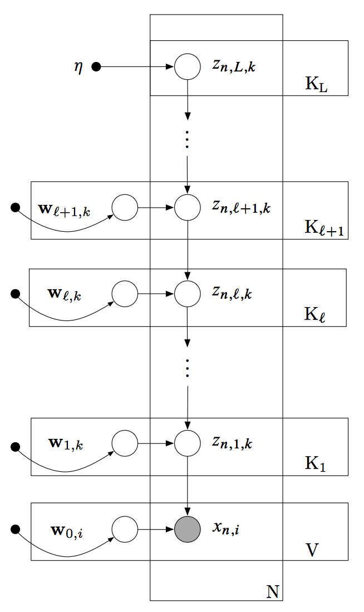
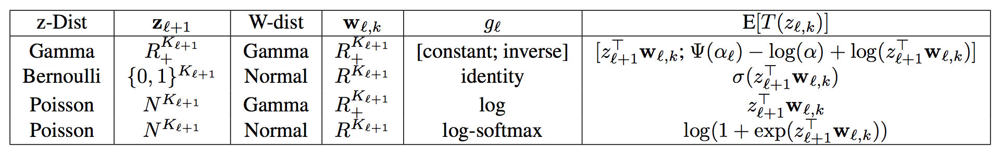
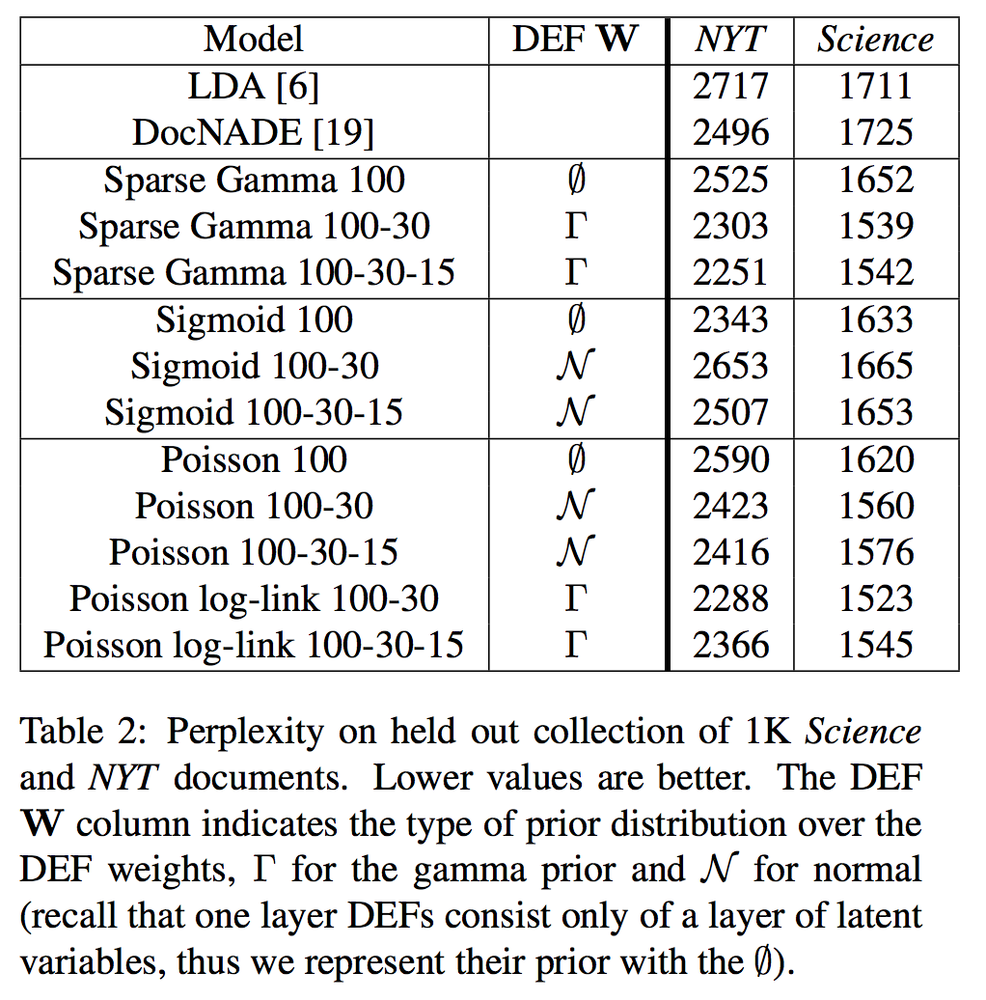
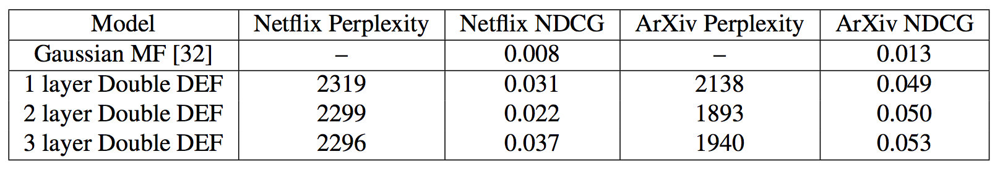

Deep Exponential Families
Вводная
В данной статье рассматривается класс моделей со скрытыми переменными под названием Deep Exponential Family (DEF), который представляет из себя генеративную модель данных. Иерархическая структура данной модели очень похожа на всем известные глубинные нейронные сети (правда здесь глубины не добрали, конечно). В общем и целом авторы статьи переложили обычные полносвязные нейронные сети на вероятностный язык и посмотрели, что из этого вышло. Далее следует описание модели, примеры DEF и проведенные эксперименты.
Экспоненциальное семейство распределений
Распределение \(p(x)\) принадлежит экспоненциальному семейству распределений, если возможно представить плотность \(p(x)\) в виде:
\[p(x) = h(x) \exp(\eta^T T(x) - a(\eta))\] где \(\eta\) - т.н. натуральные параметры, \(T\) - достаточные статистики, \(a(\eta)\) - логарифм нормировочной константы. Также можно показать, что
\[\mathbb{E} [T(x)] = \nabla_{\eta} a(\eta)\]
Можно видеть, что любое распределение из экспоненциального семейства полностью задается с помощью соответствующих h(x) и T(x). Далее принадлежность распределения к эспоненциальному семейству будем обозначать следующим образом:
\[p(x) = \text{ExpFam}(x, \eta)\]
Deep Exponential Family
Пусть \(X = \{x_1, \dots, x_N\}\) - выборка, \(x_n\) имеет размерность \(V\). Для каждого \(x_n\) имеется \(L\) слоев скрытых переменных \(\{ z_{n, 1}, \dots, z_{n, L} \}\), где \(z_{n, l} = \{z_{n, l, 1}, \dots, z_{n, l, K_l}\}\). Также в модели имеется \(L-1\) слоев весов \(\{W_{1}, \dots, W_{L-1}\}\), где каждый \(W_l = \{W_{l, 1}, \dots, W_{l, K_l}\}\) и \(W_{l, k}\) имеет размерность \(K_{l+1}\). Кроме того, задается априорное распределение на веса - \(p(W_l)\). Правдоподобие \(p(x_{n, i} | z_{n, 1}, w_{0, i})\), как обычно, задается исходя из постановки задачи. \(W_0 = \{w_{0, 1}, \dots, w_{0, V}\}\) - веса, связывающие первый скрытый слой с наблюдениями (в правдоподобии).

Введем нужные распределения:
\[\begin{align} & p(z_{n, L, k}) = \text{ExpFam}_{L}(z_{n, L, k}, \eta) \\ & p(z_{n, l, k} | z_{n, l+1}, w_{l, k}) = \text{ExpFam}_{l}(z_{n, l, k}, g_l(z_{n, l+1}^T w_{l, k})) \end{align}\]где \(g_l\) - фукнция, трансформирующая линейное преобразование в натуральные параметры распределения. Авторы называют эту функцию link function, по аналогии с обобщенными линейными моделями, где link function отвечает за связь математического ожидания распределения и линейного предсказания. Если проводить параллель с нейронными сетями, то эта функция \(g\) привносит нелинейность в модель по аналогии с нелинейной функцией активации в нейронных сетях.
Таким образом имеем следующую совместную вероятностную модель:
\[p(X, Z, W | \eta) = \prod_{n=1}^{N} \Bigg[ \Big( \prod_{i=1}^{V} p(x_{n, i} | z_{n, 1}, w_{0, i}) p(w_{0, i}) \Big) \Big( \prod_{l=1}^{L-1} \prod_{k=1}^{K_l} p(z_{n, l, k} | z_{n, l+1}, w_{l, k}) p(w_{l, k}) \Big) \prod_{k=1}^{K_L} p(z_{n, L, k} | \eta) \Bigg]\]
Примеры DEF в задаче моделирования текста
Есть словарь размера \(V\). Тогда \(x_{n, i}\) - сколько раз слово \(i\) встретилось в тексте \(n\). Правдоподобие задается следующим образом:
\[p(x_{n, i} | z_{n, 1}, w_{0, i}) = \text{Poisson}(x_{n, i} | g(z_{n, 1}^T w_{0, i}))\]
Элементы \(W_{0}\) должны быть положительными, поэтому в качестве априорного распределения на \(W_0\) берется полностью факторизованное Гамма распределение.

где Z-Dist - распределение скрытых переменных, W-Dist - априорное распределение на веса слоев, \(g_l\) - link function в слоях.
Inference
Для получения апостериорного распределения p(Z, W | X) авторы используют вариационный вывод, а именно изобретенный раннее Black Box Variational Inference (обзор от Артёма Соболева 1).
\[\mathcal{L}(q) = \mathbb{E}_{q(Z, W)} [\log p(X, Z, W) - \log q(Z, W)] \rightarrow \max\limits_{\phi}\]
где \(q(Z, W) = q(W_0) \big( \prod_{l=1}^{L-1} q(W_{l}) \prod_{n=1}^{N} q(z_{n, l}) \big) \prod_{n=1}^{N} q(z_{n, L})\) - вариационное приближение апостериорного распределения (см. Mean Field). \(q(z_{n, l})\) и \(q(W_{l})\) так же полностью факторизуются.
\[q(z_{n, l, k}) = \text{ExpFam}_{l}(z_{n, l, k}, \lambda_{n, l, k})\]
причем \(q(z_{n, l, k})\) выбирается из того же семейства, что и распределение на \(z_{n, l, k}\) в \(p(X, Z, W)\). Аналогично, в качестве вариационного приближения на веса \(q(W | \xi)\) берем распределение из того же семейства, что и \(p(W)\). Тогда \(\phi = \{\lambda, \xi \}\) - все вариационные параметры, по ним и ведется оптимизация с помощью Black Box Variational Inference (BBVI).
Эксперименты
Моделирование текста
Эксперименты проводились на корпусах текстов New York Times и Science. В качестве бейзлайнов рассматривалась модель LDA и DocNade(вроде state-of-the-art на 2013 год, но это неточно). В качестве метрики качества, как это обычно делается в моделировании текстов, рассматривалась perplexity - (экспонента от логарифма правдоподобия, усредненного по общему количеству слов) на отложенной выборке. В качестве DEF моделей взяли описанные выше. Перебирали различные прайоры на веса, количество слоев и link function. Размеры слоев зафиксировали: 100, 30, 15. Получили следующие результаты:

Выводы
- DEFы обошли бейзлайны.
- Больше слоев - лучше (как в глубинных нейронных сетях, но не настолько глубинно).
- Bernoulli DEF сложно обучать, для них при увеличении количества слоев perplexity растет, видимо в градиентах уж очень много шума.
Факторизация матриц и Double DEF
В качестве датасета взяли Arxiv click data (матрица пользователи-документы, элемент матрицы - количество кликов) и Netflix movie ratings (матрица пользователи-фильмы, элемент матрицы - рейтинг). Поменяли правдоподобие и саму модель немного, теперь:
\[\begin{align} & p(x_{n, i} | z_{n, 1}^c, z_{i, 1}^r) = \text{Poisson}(x_{n, i} | z_{n, 1}^{cT} z_{i, 1}^r) \\ & z_{n, 1}^c - \text{скрытое представление пользователя}\\ & z_{i, 1}^r - \text{скрытое представление документа/фильма}\\ \end{align}\]И добавляется еще "иерархия" (DEF) на \(z_{n, 1}^c\) и \(z_{i, 1}^r\). Если посмотреть на графическую модель, то она будет отличаться от приведенной в самом начале тем, что теперь у нас вместо \(W_{0}\) есть DEF, аналогичное ветвление слоев как это происходит от \(z_{n, 1}\). Такая модель называется Double DEF. В качестве метрик взяли perplexity и NDCG (метрика ранжирования, больше лучше). Перебирали количество слоев, получили аналогичный вывод: чем больше слоев, тем лучше (почти), бейзлайн также был побит.

Итог
Авторы предложили новую генеративную вероятностную модель, которая имеет иерархическую структуру. Воспользовались раннее придуманным методом вывода и даже побили какие-то методы, что показали в экспериментах. Есть код на C++, видимо чтобы училось быстро, сами пишут, что может появится эта модель и в Edward'е, библиотеку для вероятностного моделирования, которую они разрабатывают.
Примечание от Артёма Соболева: BBVI – не самый лучший способ делать вывод в стохастических вычислительных графах, современной науке известна масса методов лучше. См. мою серию про backprop в стохастических вычислительных графах (work in progress).↩